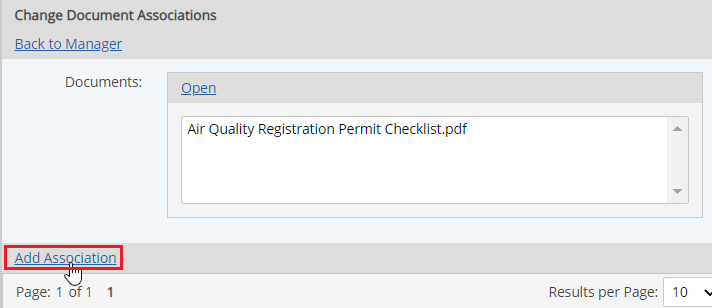
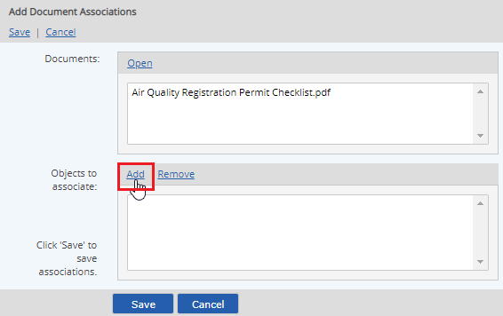
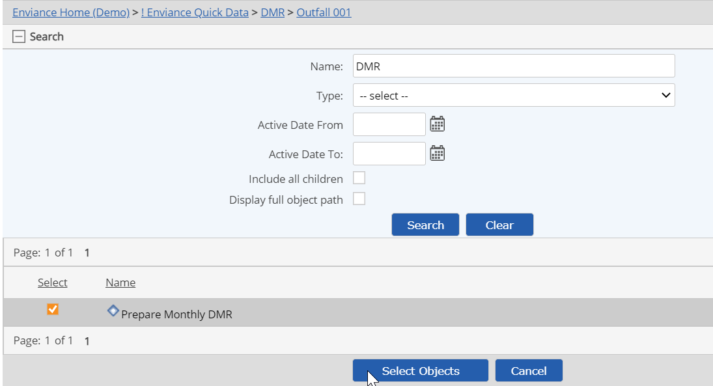
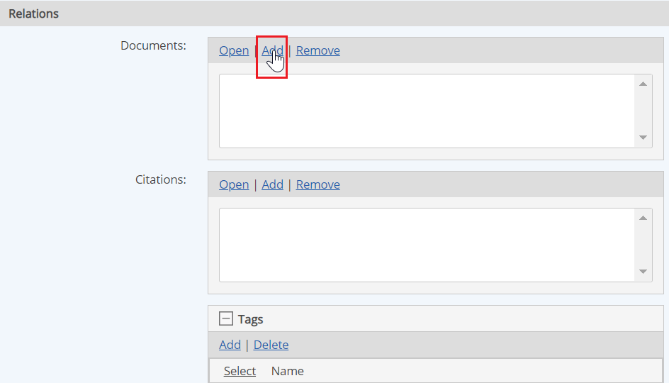
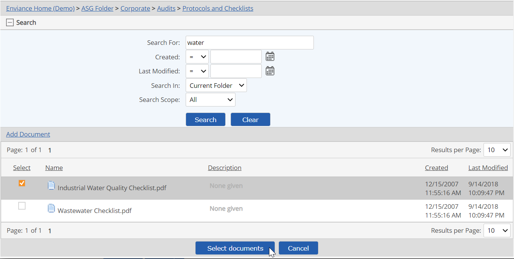
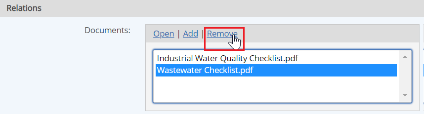

Documents may be associated with System Model objects, Requirements, and Tasks via document links. In order to associate a document with any object, the document must first be stored in the Documents library.
In order for users to view an associated document, they must have View permission to the document. Document permissions are granted separately from object permissions. Users must have permission both to the object and to the associated document or document folder to access a document associated with an object.
You can add or edit links from one or more documents to one or more System Model objects or requirements:
If you select multiple objects, you can associate documents to all documents or bulk edit all associations that the objects have in common.
Permissions: View or Edit permission on the document and Modify permissions on the object are required to edit document associations. To associate documents with tasks, a user must also have Create and Complete Tasks permission on the parent object.
To link one or more documents to one or more objects:
From the Documents library, select the document(s) you want, then right click and select Associate.
If any links to the document already exist, the objects currently linked are shown. In the case of multiple documents, any objects they have in common are shown.
Click Add Association.

Click Add in the "Objects to associate" section to find the objects to associate.

In the selection window, browse the system model or use the Search to find the objects to which you want to create links.
Select the object(s), then click Select Objects. 
Click Save to save associations.
You can link one or more objects to one or more documents by setting their relations.
Scroll to the bottom of the object properties page to the Relations section. Check the Documents box, then select Add.

The Document selection window appears.
Browse the document folders, or expand the search pane and use the search function to find the document(s) you want.
Select the document(s) to associate, then click Select documents.

Click Save, then Confirm to save changes to the object properties.
In the Applicable Requirements view, find the object(s) select the object(s).
Right click and select Properties > Edit.
Check the Documents box.
Scroll to the bottom of the properties page in the Relations section.
Documents linked to the object are shown. If you selected multiple objects, only those documents that the objects have in common are shown.
To add a document link, click Add, and find and select the documents you want to link.
To remove a document link, select the document and click Remove. 
Click Save, then Confirm to save the changes to the object.